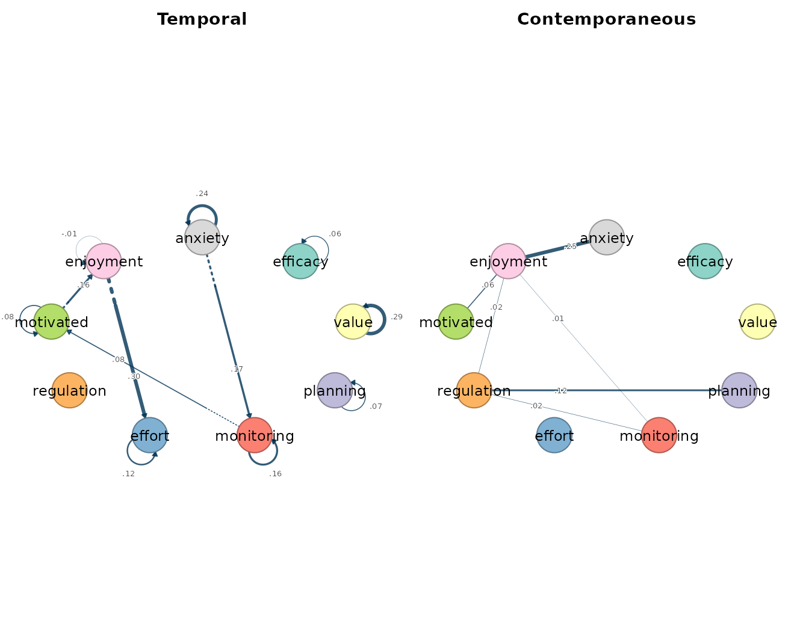
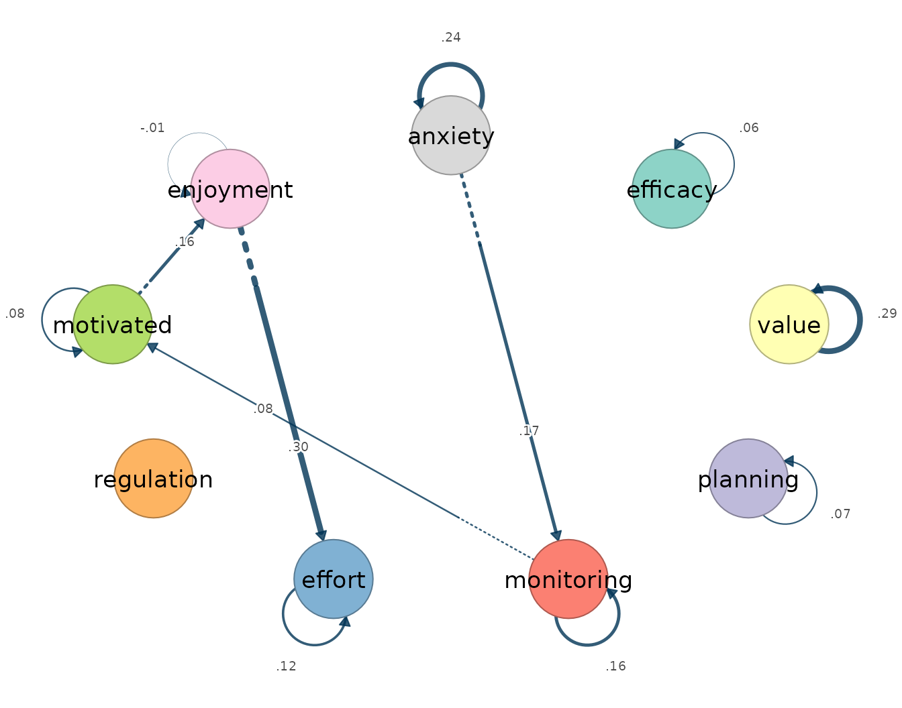
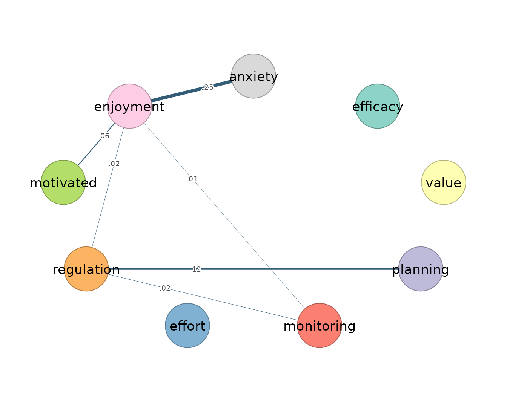
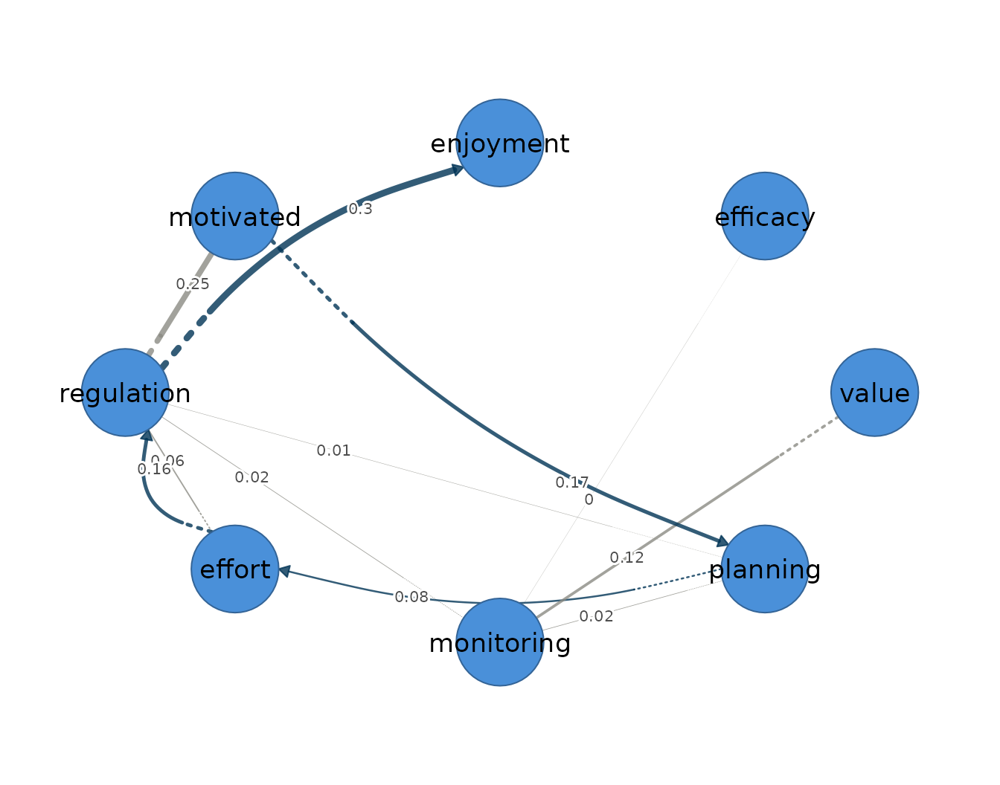

The graphical vector autoregression models one person’s multivariate series as a first-order Gaussian process, in which each occasion’s measurements are determined jointly by the values of all variables one occasion earlier and by the associations that remain among the variables within the same occasion. It is an idiographic model, estimated for a single individual, on the premise that within-person dynamics need not match the between-person structure of the group. It presumes weak stationarity, meaning that the mean, variance, and autocovariance of every series are constant across the observation window; linear, lag-one dynamics; approximately Gaussian fluctuations; and equally spaced measurement occasions. To these it adds a structural assumption of its own — sparsity — namely that many of the possible associations are genuinely absent, and that estimation should recover which ones.
The model yields two networks over the same variables (Epskamp et al.
2018). The temporal network is directed: an edge
from -> to states that the value of from at
occasion
predicts the value of to at occasion
,
holding the other lagged variables constant, so that each arrow is a
claim about lag-one prediction rather than co-occurrence. The
contemporaneous network is undirected: after the previous occasion has
explained what it can, the part of each variable left unexplained — its
innovation — may still be associated with the innovations of the others,
and the contemporaneous edges are the partial correlations among these
remainders, the within-occasion associations that lagged prediction does
not account for.
fit_graphical_var() estimates both networks jointly by a
penalized two-step procedure: a lasso-penalized regression estimates the
lagged effects, a graphical lasso estimates the within-occasion
associations from the residuals of that regression, and the two steps
alternate until the solution stabilizes. The strength of the penalty is
selected by the extended Bayesian information criterion, whose
conservatism is governed by a parameter that charges for every retained
edge. This is what distinguishes the graphical estimator from the
ordinary VAR fitted by fit_var(), which returns a
coefficient in every cell of both networks and leaves the analyst to
judge which small values are noise. Under the penalty, weak edges are
shrunk to exactly zero, so an absent edge is a model-selected absence
rather than a small estimate the reader rounds away; the cost is a
downward bias on the weights of the edges that survive.
Data and preprocessing
The esm_srl data are the supplied anonymized momentary
self-regulated-learning, motivation, and anxiety ratings for 41
students, each assessed repeatedly during a study. This vignette keeps
the established worked example: Quinn on all nine indicators. Quinn was
chosen for this deliberately edge-rich demonstration; the choice is not
a population-sampling rule and must not be used as evidence that every
participant has a non-empty temporal network. Because the penalty does
not protect against a violated stationarity assumption — a trend
inflates the lagged coefficients whether or not they are penalized — the
stationarity screen precedes the fit.
preprocess(esm_srl, vars = vars, id = "name", subject = "Quinn")
#> Idiographic Preprocessing
#> Variables: 9 (efficacy, value, planning, monitoring, effort, regulation, motivated, enjoyment, anxiety)
#> Ordered rows: 79
#> Retained pairs: 78
#> Trend flags: 6
#> High AR flags: 0
#> Drift flags: 1
#> Unit-root risk: 0
#> Zero variance: 0
#> Tables: x$pairs | x$counts | x$diagnostics
#>
#> 6 of 9 subject-series show a trend or unit-root that can bias the temporal network. preprocess() only diagnosed this; to clean just the series that need it, re-run with:
#> preprocess(data = esm_srl, vars = vars, id = "name", subject = "Quinn", detrend = "auto")Quinn contributes 79 occasions, of which 78 form complete current/lagged pairs. Six of the nine series carry a linear-trend flag. The model below is therefore a worked API and interpretation example, not a confirmatory analysis of Quinn’s dynamics. A substantive analysis should resolve the flagged non-stationarity and report a detrending sensitivity analysis before interpreting the temporal edges.
Fitting the model
Two non-default arguments make this an intentionally sensitive
demonstration. penalize_diagonal = FALSE exempts the
autoregressions from the lasso penalty; the default penalizes them along
with the cross-lags, which shrinks the carry-over of each variable —
often the most robust temporal effect — to zero.
gamma = 0.1 is a less conservative selection threshold than
the default of 0.5. These settings preserve the established non-empty
worked network, but they are stated explicitly so that it cannot be
mistaken for an outcome-neutral default fit. The selected edges belong
to the more sensitive, less specific end of the selection scale.
fit <- fit_graphical_var(esm_srl, vars = vars, id = "name", subject = "Quinn",
penalize_diagonal = FALSE, gamma = 0.1,
n_lambda = 8)
fit
#> Graphical VAR Result
#> Variables: 9 (efficacy, value, planning, monitoring, effort, regulation, motivated, enjoyment, anxiety)
#> Lags: 1
#> Observations: 78
#> Temporal edges: 13 / 81
#> Contemp edges: 7 / 36
#> EBIC: 611.06 (gamma=0.10)
#> Lambda: beta=0.2749, kappa=0.2221
#>
#> Temporal [directed]
#> weights [-0.008, 0.299] | +11 / -2 edges
#> efficacy value planning monitoring effort regulation motivated
#> efficacy 0.06 0.00 0.00 0.00 0.00 0 0.00
#> value 0.00 0.29 0.00 0.00 0.00 0 0.00
#> planning 0.00 0.00 0.07 0.00 0.00 0 0.00
#> monitoring 0.00 0.00 0.00 0.16 0.00 0 0.08
#> effort 0.00 0.00 0.00 0.00 0.12 0 0.00
#> regulation 0.00 0.00 0.00 0.00 0.00 0 0.00
#> motivated 0.00 0.00 0.00 0.00 0.00 0 0.08
#> enjoyment 0.00 0.00 0.00 0.00 0.30 0 0.00
#> anxiety 0.00 0.00 0.00 0.17 0.00 0 0.00
#> enjoyment anxiety
#> efficacy 0.00 0.00
#> value 0.00 0.00
#> planning 0.00 0.00
#> monitoring 0.00 0.00
#> effort 0.00 0.00
#> regulation 0.00 0.00
#> motivated 0.16 0.00
#> enjoyment -0.01 0.00
#> anxiety 0.00 0.24
#>
#> Contemporaneous [undirected]
#> weights [0.002, 0.255] | +7 / -0 edges
#> efficacy value planning monitoring effort regulation motivated
#> efficacy 0 0 0.00 0.00 0 0.00 0.00
#> value 0 0 0.00 0.00 0 0.00 0.00
#> planning 0 0 0.00 0.00 0 0.12 0.00
#> monitoring 0 0 0.00 0.00 0 0.02 0.00
#> effort 0 0 0.00 0.00 0 0.00 0.00
#> regulation 0 0 0.12 0.02 0 0.00 0.00
#> motivated 0 0 0.00 0.00 0 0.00 0.00
#> enjoyment 0 0 0.00 0.01 0 0.02 0.06
#> anxiety 0 0 0.00 0.00 0 0.00 0.00
#> enjoyment anxiety
#> efficacy 0.00 0.00
#> value 0.00 0.00
#> planning 0.00 0.00
#> monitoring 0.01 0.00
#> effort 0.00 0.00
#> regulation 0.02 0.00
#> motivated 0.06 0.00
#> enjoyment 0.00 0.25
#> anxiety 0.25 0.00
#>
#> plot(x) | plot(x, layer = "temporal")
#> edges(x) | nodes(x) | summary(x) | coefs(x) | matrices(x)The model is estimated on 78 lagged pairs. It retains four directed cross-lagged temporal edges and the nine autoregressions, together with seven contemporaneous partial correlations.
Reading the output
The summary() method reports one row per network layer,
with the edge count, density, mean absolute weight, and the split of
positive and negative edges.
summary(fit)
#> network n_nodes n_edges density mean_abs_weight n_positive
#> 1 temporal 9 4 0.05555556 0.17816759 4
#> 2 contemporaneous 9 7 0.19444444 0.06974497 7
#> n_negative
#> 1 0
#> 2 0The temporal layer holds four cross-lagged edges (density 0.056, mean absolute weight 0.178) and the contemporaneous layer seven (density 0.194, mean absolute weight 0.070); every retained edge in both layers is positive.
edges(fit, network = "temporal", n = 5)
#> network from to weight
#> 1 temporal enjoyment effort 0.29916373
#> 2 temporal anxiety monitoring 0.17031855
#> 3 temporal motivated enjoyment 0.16390707
#> 4 temporal monitoring motivated 0.07928101The directed temporal edges describe a motivation-to-regulation sequence. Enjoyment at one occasion predicts higher effort regulation at the next (0.30), feeling motivated predicts later enjoyment (0.16), and monitoring predicts later motivation (0.08); anxiety predicts higher subsequent monitoring (0.17), a within-person coupling of momentary anxiety to the regulation that follows it.
edges(fit, network = "contemporaneous", n = 8)
#> network from to weight
#> 1 contemporaneous enjoyment anxiety 0.254827050
#> 2 contemporaneous planning regulation 0.121800007
#> 3 contemporaneous motivated enjoyment 0.056542219
#> 4 contemporaneous regulation enjoyment 0.022803843
#> 5 contemporaneous monitoring regulation 0.020570876
#> 6 contemporaneous monitoring enjoyment 0.009411124
#> 7 contemporaneous value regulation 0.002259688The within-occasion structure is anchored by a positive enjoyment–anxiety partial correlation (0.26) and a planning–regulation coupling (0.12), with enjoyment and regulation connecting the motivation and self-regulation clusters in the same moment.
nodes(fit)
#> network node strength out_strength in_strength self
#> 1 temporal efficacy 0.000000000 0.00000000 0.00000000 0.057423873
#> 2 temporal value 0.000000000 0.00000000 0.00000000 0.290246122
#> 3 temporal planning 0.000000000 0.00000000 0.00000000 0.067762154
#> 4 temporal monitoring 0.249599566 0.07928101 0.17031855 0.158372764
#> 5 temporal effort 0.299163733 0.00000000 0.29916373 0.120337048
#> 6 temporal regulation 0.000000000 0.00000000 0.00000000 -0.002027966
#> 7 temporal motivated 0.243188083 0.16390707 0.07928101 0.079687240
#> 8 temporal enjoyment 0.463070804 0.29916373 0.16390707 -0.008308922
#> 9 temporal anxiety 0.170318554 0.17031855 0.00000000 0.239278152
#> 10 contemporaneous efficacy 0.000000000 NA NA 0.000000000
#> 11 contemporaneous value 0.002259688 NA NA 0.000000000
#> 12 contemporaneous planning 0.121800007 NA NA 0.000000000
#> 13 contemporaneous monitoring 0.029982000 NA NA 0.000000000
#> 14 contemporaneous effort 0.000000000 NA NA 0.000000000
#> 15 contemporaneous regulation 0.167434414 NA NA 0.000000000
#> 16 contemporaneous motivated 0.056542219 NA NA 0.000000000
#> 17 contemporaneous enjoyment 0.343584235 NA NA 0.000000000
#> 18 contemporaneous anxiety 0.254827050 NA NA 0.000000000nodes() separates each variable’s outgoing and incoming
cross-lagged strength from its autoregression, and gives its total
strength in the undirected contemporaneous layer. Enjoyment is the
busiest node across both layers, receiving and sending temporal edges
and anchoring the contemporaneous cluster.
Visualizing the network
The plot() method draws every network in the result, and
passing layer= isolates one. Arrows in the temporal panel
encode lag-one prediction; edge width scales with absolute weight and
colour encodes sign.
plot(fit)
plot(fit, layer = "temporal")
The temporal graph is directed and sparse, tracing the motivation-to-regulation sequence the edge table quantified.
plot(fit, layer = "contemporaneous")
The contemporaneous graph is undirected, with enjoyment and regulation at the junction of the momentary motivation and self-regulation associations.
Because the result combines a directed temporal layer and an
undirected contemporaneous layer, it is itself a mixed network, and
plot(fit, mixed = TRUE) draws both in one graph: the
lag-one effects as curved arrows and the contemporaneous partial
correlations as straight edges.
plot(fit, mixed = TRUE)